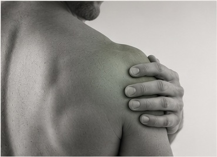
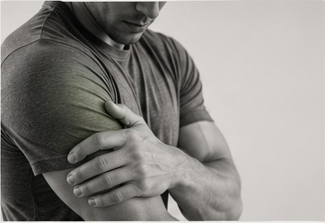
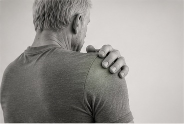
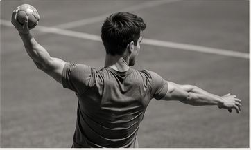
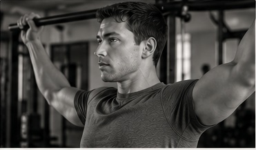
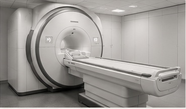
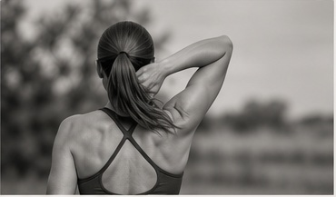

Misschien herkent u zichzelf
Pijn bij heffen
Klachten bij een jas aantrekken, iets uit een kast pakken, tillen of bovenhands sporten.
Pijn in de nacht
Moeite om op de schouder te liggen, wakker worden of geen comfortabele slaaphouding vinden.
Krachtverlies
De arm voelt zwaar, u vermijdt bovenhands werk of merkt minder kracht tijdens sport.
Stijfheid
Moeite met aankleden, de hand op de rug brengen of de arm volledig boven het hoofd bewegen.
De plek waar u pijn voelt geeft aanwijzingen, maar vertelt niet automatisch welke structuur de klacht veroorzaakt.
Wanneer de rotator cuff en omliggende pezen waarschijnlijk een rol spelen
De rotator cuff bestaat uit vier spieren en pezen die de schouder helpen sturen en belasten. Klachten ontstaan vaak na een verandering in sport, werk, training of herstel. Pijn betekent niet automatisch dat een pees ernstig beschadigd of gescheurd is.

Rotator cuff tendinopathie
- Pijn bij heffen of reiken
- Klachten bij bovenhands werk of sport
- Pijn tijdens of na belasting
- Vaak gevoelig bij slapen op de schouder
Een geleidelijke opbouw van kracht en peescapaciteit is meestal de kern van herstel.

Bicepsgerelateerde schouderpijn
- Pijn aan de voorzijde van de schouder
- Klachten bij tillen, trekken of werpen
- Vaak samen met rotator cuff gevoeligheid
De behandeling richt zich op de totale schouderbelasting en niet alleen op één pees.
“Impingement” betekent niet dat iets simpelweg klem zit.
Moderne inzichten laten zien dat schouderpijn meestal wordt beïnvloed door peesbelasting, gevoeligheid, beweging, herstel en context. De term subacromiale pijn beschrijft het patroon vaak beter dan een mechanische beknelling.
Wanneer het schoudergewricht waarschijnlijk betrokken is
Frozen shoulder
Een frozen shoulder begint vaak met pijn en ontwikkelt daarna duidelijke stijfheid. Vooral draaien, aankleden en bovenhands bewegen worden lastig. Herstel verloopt meestal in fasen en kan tijd kosten, maar veel mensen verbeteren zonder operatie.
AC-gewricht
Pijn boven op de schouder, vooral bij de arm voor het lichaam brengen, bankdrukken of na een val op de schouder, kan passen bij gevoeligheid van het AC-gewricht.
Schouderartrose
Artrose betekent niet dat de schouder “op” is. Kracht, beweging, slaap en dagelijkse functie kunnen vaak verbeteren, ook wanneer de röntgenfoto niet verandert.

Wanneer extra onderzoek soms nodig is

Instabiliteit of luxatie
- De schouder is uit de kom geweest
- Gevoel van onzekerheid in eindstanden
- Terugkerende klachten bij werpen of contactsport
Revalidatie richt zich op kracht, controle, vertrouwen en sportspecifieke belasting.

Rotator cuff scheur
Peesscheuren komen ook voor bij mensen zonder pijn. Veel degeneratieve of gedeeltelijke scheuren kunnen eerst conservatief worden behandeld. Een acute traumatische scheur met plotseling duidelijk krachtverlies vraagt sneller medische beoordeling.
Veel schouderklachten herstellen zonder operatie
- Rotator cuff tendinopathie
- Subacromiale pijn
- Bicepsgerelateerde klachten
- Frozen shoulder
- AC-gewrichtsklachten
- Milde tot matige artrose
- Gedeeltelijke peesscheuren
- Terugkerende instabiliteit
- Labrumletsels
- Calcific tendinopathy
- Acute volledige peesscheur
- Niet te reponeren luxatie
- Complexe fractuur
- Rode, hete schouder met koorts
Een scan laat zien hoe uw schouder eruitziet.
Ons onderzoek laat zien hoe uw schouder beweegt en functioneert.Wanneer is een MRI zinvol?
Bij de meeste schouderklachten is beeldvorming niet meteen nodig. Scans laten vaak peesveranderingen, slijmbeursvocht of artrose zien die ook voorkomen bij mensen zonder pijn.
Beeldvorming kan passend zijn bij:
- acute traumatische zwakte;
- verdenking op een volledige peesscheur;
- terugkerende instabiliteit of luxaties;
- onverwacht herstel of operatieve planning;
- verdenking op fractuur of andere specifieke aandoening.

Hoe onderzoeken en behandelen wij uw schouder?
- 01
We luisteren
We bespreken het ontstaan, slaap, sport, werk, belasting en wat u opnieuw wilt kunnen doen.
- 02
We onderzoeken
We beoordelen actieve en passieve beweging, kracht, belastbaarheid, nekfunctie en relevante provocatiepatronen.
- 03
We leggen uit
U krijgt een begrijpelijke werkdiagnose, prognose en uitleg over wat veilig is.
- 04
We bouwen op
Met krachttraining, belastingsmanagement en een stapsgewijze terugkeer naar werk of sport.
Progressieve oefentherapie
Gericht op kracht, peescapaciteit, controle en vertrouwen in bewegen.
Belastingsmanagement
We stemmen slapen, werken, tillen en sporten af op uw huidige belastbaarheid.
Hands-on ondersteuning
Mobilisaties of spierbehandeling kunnen tijdelijk helpen binnen een actief plan.
Terugkeer naar sport
We bouwen bovenhandse en sportspecifieke belasting gecontroleerd op.
Herstel stopt niet wanneer de pijn minder wordt.
We helpen u de schouder weer betrouwbaar te gebruiken tijdens werk, fitness, tennis, zwemmen of andere activiteiten.

Veelgestelde vragen over schouderklachten
Heb ik een “impingement”?
De term wordt nog vaak gebruikt, maar schouderpijn is meestal complexer dan iets dat simpelweg klem zit. Belasting, peesgevoeligheid, beweging en herstel spelen vaak samen een rol.
Heb ik een MRI nodig?
Meestal niet direct. Uw verhaal en lichamelijk onderzoek geven vaak voldoende informatie om veilig met behandeling te starten.
Betekent een peesscheur dat ik geopereerd moet worden?
Nee. Veel degeneratieve en gedeeltelijke scheuren verbeteren met oefentherapie. Acute traumatische scheuren met duidelijk krachtverlies vragen wel snellere beoordeling.
Kan fysiotherapie helpen bij frozen shoulder?
Ja. Behandeling kan helpen met uitleg, pijnmanagement, het behouden van functie en een passende opbouw van beweging en kracht.
Mag ik blijven trainen?
Vaak wel, met tijdelijke aanpassingen. Volledige rust is zelden de beste oplossing; de juiste dosis belasting ondersteunt herstel.
Kan ik op mijn pijnlijke schouder slapen?
Dat mag als het comfortabel is. Soms helpt een kussen onder de arm of tijdelijk op de andere zijde slapen.
Helpt een injectie altijd?
Een injectie kan bij sommige klachten tijdelijk verlichting geven, maar vervangt geen opbouw van kracht en belastbaarheid.
Wanneer moet ik mij zorgen maken?
Na ernstig trauma, bij plotseling krachtverlies, koorts, een zichtbare standsafwijking of toenemende neurologische klachten is medische beoordeling belangrijk.